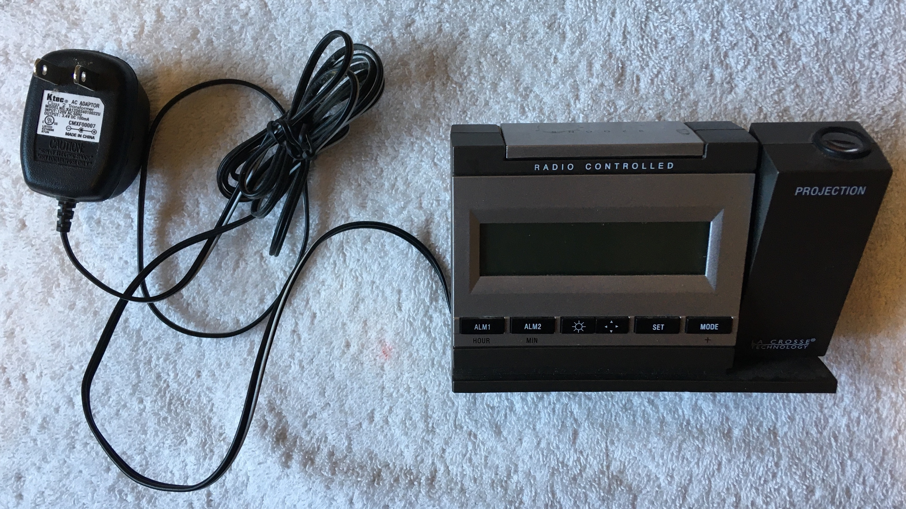
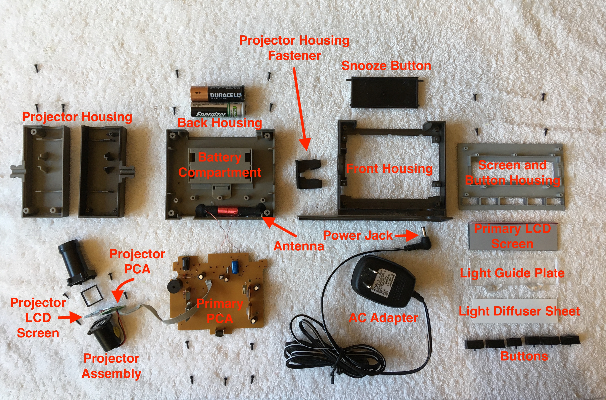
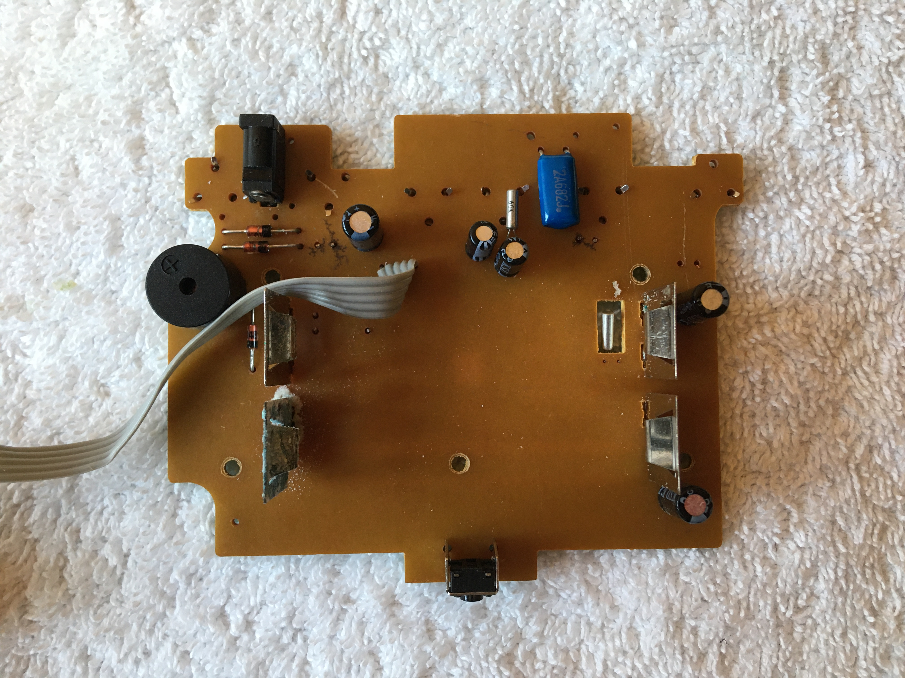
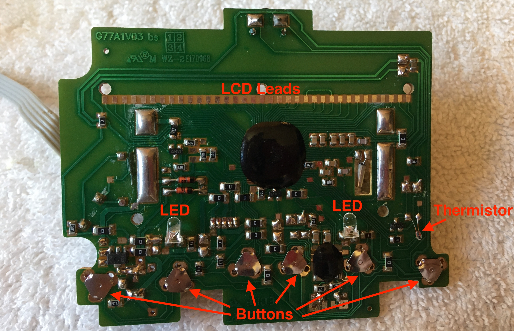
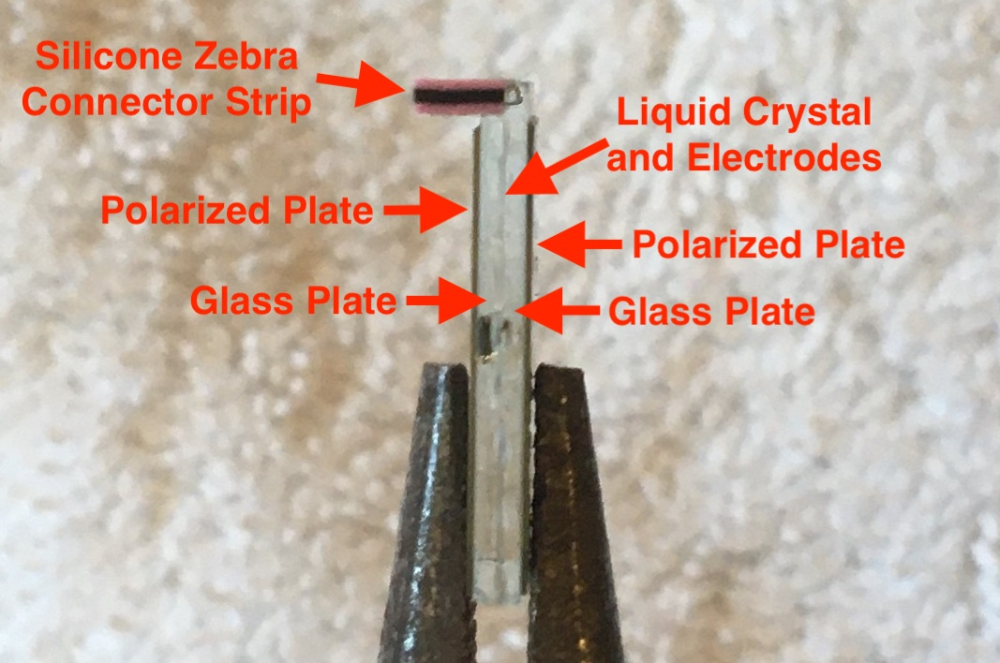
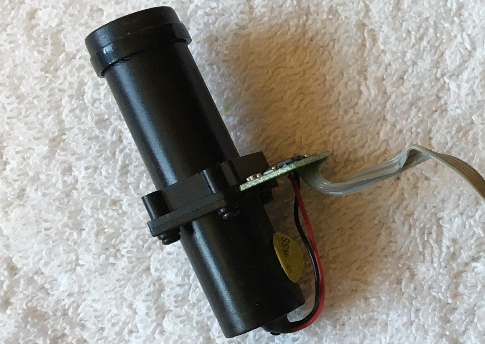
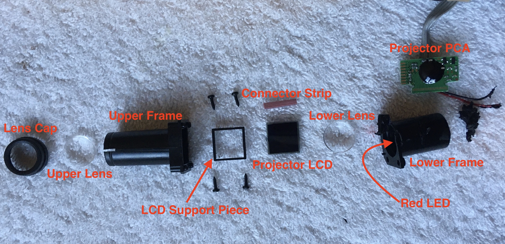
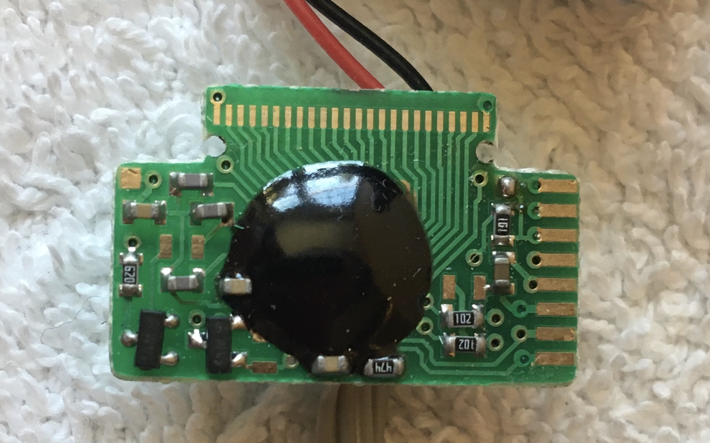
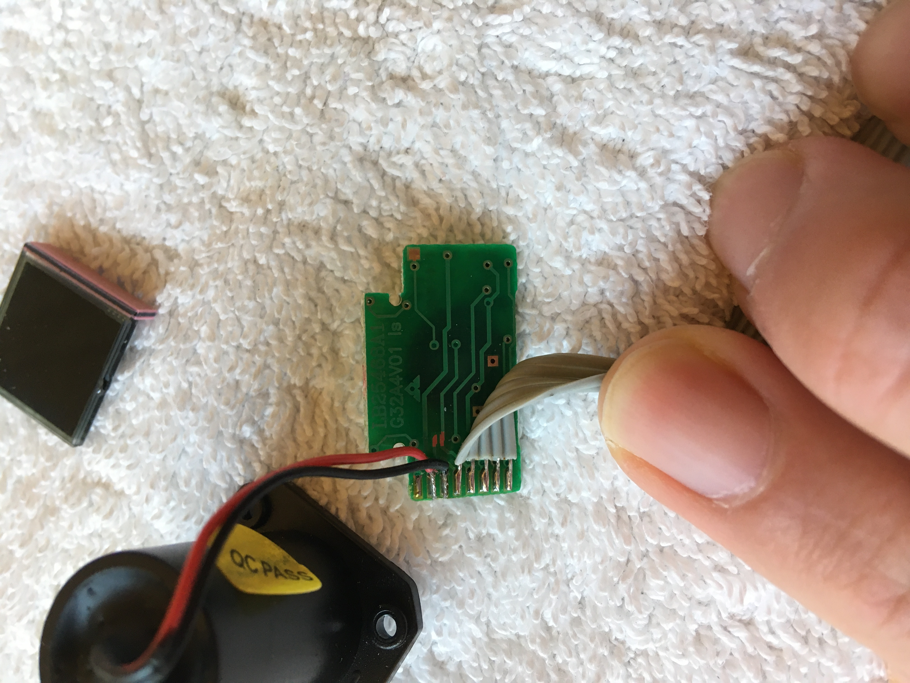
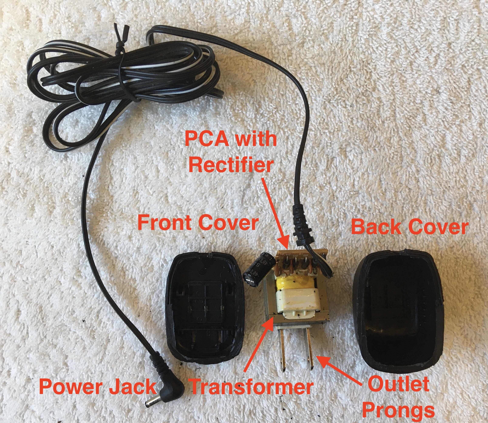

Introduction
The Model WT-5720 La Crosse Technology Alarm Clock was an old alarm clock of my mom's. Like most digital alarm clocks, it displayed the time and allowed alarms to be set at certain times using a small LCD screen. The outstanding features of this alarm clock though were its radio controlled time and ability to display the time on the ceiling using a projection unit. The benefit of the projection unit is clear as it allows one to check the time while laying in bed simply by opening one's eyes. However, I had not heard about the concept of radio controlled time before. I've included a paragraph below from the product manual on how the clock uses radio controlled time.
The NIST (National Institute of Standards and Technology—Time and Frequency Division) WWVB radio station is located in Ft. Collins, Colorado, and transmits the exact time signal continuously throughout the United States at 60 kHz. The signal can be received up to 2,000 miles away through the internal antenna in the projection alarm. However, due to the nature of the Earth’s Ionosphere, reception is very limited during daylight hours. The projection alarm will search for a signal every night when reception is best. The WWVB radio station derives its signal from the NIST Atomic clock in Boulder, Colorado. A team of atomic physicists is continually measuring every second, of every day, to an accuracy of ten billionths of a second per day. These physicists have created an international standard, measuring a second as 9,192,631,770 vibrations of a Cesium-133 atom in a vacuum.
I found it fascinating to learn how the measurement of time has been unified across the nation. Although it wasn't always broadcasting the time, the NIST WWVB radio station has been around since 1919!
Original Alarm Clock
Labelled Exploded View
Primary PCA
The primary PCB and the projector PCB were not marked with any labels to indicate what type of electrical components were located on the PCA. This made it difficult to identify components on the PCAs unless the components themselves were already labeled such as with the through-hole mounted capacitors. I did my best to make educated guesses as to what was contained on the circuit board in the labelled photos below.
Top of Primary PCA
- C1: Electrolytic Capacitor
47 uF, 16 V - C2: Electrolytic Capacitor
100 uF, 6.3 V - C3: Electrolytic Capacitor
22 uF, 16 V - C4: Electrolytic Capacitor
6.8 uF, 50 V - C5: Electrolytic Capacitor
100 uF, 10 V - C6: Polyester Film Capacitor
6.8 nf, 100 V
On the bottom of the PCA there are two noteworthy black blobs, the larger of which has many traces leading towards it. Hidden underneath each black blob is likely an integrated circuit (IC). Given how many traces are running towards the larger blob, I would guess a microprocessor lies beneath it. The ICs underneath these black blobs are made using the Chip on Board (COB) manufacturing method rather than being made to function independently with separate packaging. Using the COB method to mount ICs on a PCB saves space on the board and cuts out manufacturing costs associated with the additional step of packaging each IC. Without the packaging though, the ICs are exposed to damage from the environment and so they are covered with the black blobs. The blobs are made of a material called a potting compound which acts to protect the chips on the PCB from thermal, electrical, chemical, and physical damage they may encounter during the life of the product. Physical damage to the PCB is an especially relevant concern for an alarm clock which may receive a serious beating each morning.
It's also worthwhile to note the unusual design of the buttons which don't look much like the more common tactile switch buttons as seen on the top of the board. Each button is composed of a warped metal sheet with three prongs each folded over its own conductive hole on the board. Pressing a plastic button on the outside of the alarm clock forces a small jut of plastic on the button up against the center of one of the metal sheets. This causes the metal sheet to deflect inwards and make contact with a circular conductive point on the board. This connects the circuit and allows the microprocessor to read a digital high from that button. As soon as the button is released, the metal sheet breaks contact with the conductive point and once again returns to its warped shape. With the circuit broken, the microprocessor would read a digital low from that button. This button design appears cheaper and more lightweight than tactile switches, but is likely slightly harder to implement.
Bottom of Primary PCA
LCD Screens
Although Liquid Crystal Display (LCD) screens are commonplace in modern digital technology, I hadn't taken the time to understand how they worked until now. The alarm clock contains two LCD screens. One is used as the main screen where the time, temperature, time-zone, battery-life, and other information are displayed for the user. The other LCD is used to display the time on a screen in the projector unit before it is projected onto the ceiling. After a bit of research, I got a basic grasp of how LCD worked (I found this tutorial particularly helpful). Based on my limited understanding, I labelled what I thought to be the important components of the LCD on the picture below.
Labelled Projector LCD Screen
The two parallel polarized plates in the above picture are misaligned by 90 degrees. Each polarizer only allows light waves to pass through that are oscillating in line with the polarizer. Since the two polarizers are misaligned, no light can pass through the screen unless somehow the oscillation direction of the light waves can be altered between the two polarized plates. This is where the liquid crystal comes into play. The liquid crystal molecules are arranged in such a way that they reorient the oscillations of the light waves by 90 degrees (twisted nematic mode), allowing light to pass through the LCD. However, when an electrical field is applied to the liquid crystal, the liquid crystal molecules rearrange and no longer reorient the oscillations of the light waves to pass through the second polarizer. Therefore, by applying voltage on and off across a pixel, the pixel darkens and lightens respectively. The primary LCD is categorized as transflective since it uses both ambient light and internal LEDs to light the display, while the projector LCD is categorized as transmissive since it relies on an internal red LED to light the display.
To control what is displayed on the LCD, the microprocessor selects the appropriate traces on the PCB to carry digital signals. Current then flows from the PCB leads across a flexible conductive strip to the LCD leads, illuminating pixels on the display. The flexible conductive strips (silicone zebra connector strips) require tight contact between the two surfaces to properly conduct electricity. This is not a problem when the PCB is screwed down tightly over the LCD inside the alarm clock, but it can be difficult to replicate just using one's hands. Below is a video of the primary LCD display popping up partially while I press the conductive strip down onto the PCB leads. Note that I have the LCD oriented backwards. In fact the bottom of the LCD rests above the pair of green LEDs used to light the screen at night.
Testing LCD Screen
Projector
Arguably the coolest part of this alarm clock, I was interested to see how the projector unit worked. Playing around with the projector I collected the following information: the LED appeared red when powered independent of the projector assembly, fine text appeared on the LCD screen when the flexible conductive strip was pressed between the leads of the powered PCA and the leads of the LCD, and the text that appeared on the ceiling in the fully assembled product was substantially larger than the text on the projector LCD. These observations led me to come to the conclusion that the lower lens focused the light from the LED onto the LCD while the upper lens expanded the projected text shining through the LCD. Note the small yellow sticker labeled "QC Pass" which notifies us that the projector passed the company's quality control process.
Projector Unit
Labelled Exploded View of Projector Unit
The PCA attached to the projector appears limited to receiving control signals from the primary PCA, controlling the projector LCD with its own microprocessor, and powering the red LED. Again, note the potting compound used to cover the microprocessor which was manufactured with the COB method.
 Projector PCA
AC Adapter
Reading the label on the AC adapter which stated that the device had an input voltage of 120V AC 60Hz at the wall outlet and output voltage of 3.4V DC at the power jack, I assumed the AC adapter contained a small transformer and rectifier circuit based on what I had seen with the transformer in the subwoofer speaker I tore down last year. Interested to see if my newfound intuition was right, I decided to open up the AC adapter.
Labelled Exploded View of AC Adapter

Close-up of Transformer PCA
Like I expected the AC adapter contained a small transformer and the four diodes rectifying the voltage from AC to DC. What I hadn't initially considered though were the 4 ceramic disc capacitors and 1 large electrolytic capacitor (1000 uF, 25 V). Using only the four diodes in the full bridge rectifier arrangement, the alternating current is converted to a repeating current by inverting the negative portion of the alternating current. The addition of the capacitors acts to smooth out the current supply by limiting the extent to which the voltage drops, maintaining a more constant current supply similar to direct current. Given the presence of helpful labels on the transformer PCB, this board was clearly produced by a different manufacturer than the manufacturer of the boards inside the alarm clock.